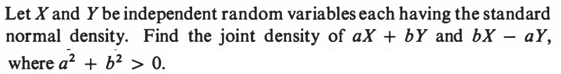
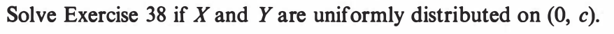
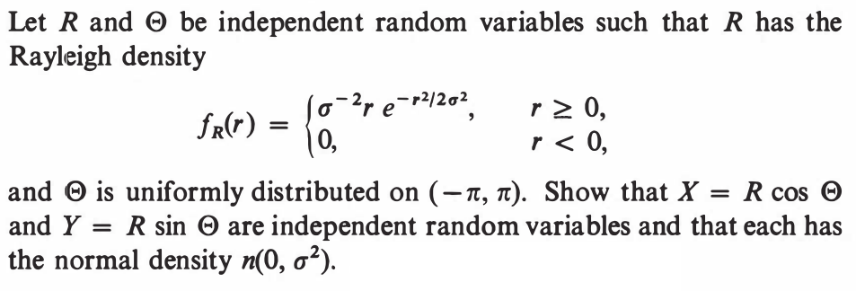

|
|---|
EXAMPLE 1: If $X$ is uniformly distributed over $[0,2],$ then find a density for $X^2.$
SOLUTION: Let $Y = X^2.$ A density for $X$ is $f(x) = \frac 12$ if $0\leq x\leq 2$ (and 0 else). We shall pass to the CDF of $X:$ $$F(x) = \left\{\begin{array}{ll}0&\text{if }x < 0\\ \frac x2&\text{if }0\leq x < 2\\ 1&\text{otherwise.}\end{array}\right. $$ From this we shall compute the CDF of $Y.$ Clearly, $Y$ cannot take values outside $[0,4].$ So $G(y) = 0$ if $y<0$ and $G(y) = 1$ if $y\geq 2.$ Let $y\in[0,2).$ Then $$G(y) = P(Y\leq y) = P(X^2\leq y) = P(X\leq \sqrt y) = \frac 12\sqrt y.$$ Differentiating this, we arrive at the required density of $Y$ as $$g(y) = G'(y) = \left\{\begin{array}{ll}\frac{1}{4\sqrt y}&\text{if }y\in[0,2]\\ 0&\text{otherwise.}\end{array}\right.$$ ■ You see the advantage of monotonicity. Even though $x\mapsto x^2$ is a not a monotone function over ${\mathbb R},$ it is so when restricted to $[0,2].$ The CDF technique can handle even some simple non-monotonic cases, as we show now.EXAMPLE 2: Let $X$ be uniform over $[-1,1].$ Find the density of $X^2.$
SOLUTION: Clearly, $Y=X^2$ cannot go outside $[0,1].$ So its CDF $G(y)$ must have $G(y)=0$ for $y<0$ and $G(y)=1$ for $y\geq 1.$ For $y\in[0,1)$ we have $$G(y) = P(X^2\leq y) = P(-\sqrt y \leq X \leq \sqrt y) = \sqrt y.$$ Differentiating we get the density $$g(y) = \left\{\begin{array}{ll}\frac{1}{2\sqrt y}&\text{if }y\in[0,1]\\ 0&\text{otherwise.}\end{array}\right. $$ ■EXERCISE 1: If $X$ has density $f(x)=\left\{\begin{array}{ll}2x&\text{if }x\in(0,1)\\ 0&\text{otherwise.}\end{array}\right.$, then find density of $X^2.$
EXERCISE 2: If $X$ has constant density over $(0,1)$ and zero outside it, then guess the density of $1-X$, and prove your guess.
EXERCISE 3: If $X$ has density $f(x)$, then the density of $-X$ is
EXERCISE 4: If $(X,Y)$ has joint density $f(x,y) = \frac{1}{2\pi} e^{-\frac 12(x^2+y^2)},$ then find the density of $R = \sqrt{X^2+Y^2}.$
EXERCISE 5: If $(X,Y)$ is uniformly distributed over the unit disc in ${\mathbb R}^2,$ and we write $(X,Y)$ as $(R,\Theta)$ in polar coordinates where $\Theta\in[0,2\pi),$ then find density of $R$ and also the density of $\Theta.$
EXERCISE 6: Let $X_1,...,X_n$ be IID with density $f(x).$ Find a density for $\x 1$, the minimum.
EXERCISE 7: If $X_1,...,X_5$ are IID with density $f(x)=\left\{\begin{array}{ll}2 e^{-2x}&\text{if }x>0\\ 0&\text{otherwise.}\end{array}\right.$, find density of $\x 5.$
EXERCISE 8: If $X_1,...,X_n$ are IID with density $f(x)=\left\{\begin{array}{ll}\frac 1\theta&\text{if }x\in(0,\theta)\\ 0&\text{otherwise.}\end{array}\right.$, find a constant $c$ such that $E(c\x n)=\theta.$
EXAMPLE 3: Let $X_1, X_2$ be IID with density $f(x)$ and CDF $F(x).$ Show that the joint CDF of $(\x 1, \x 2)$ (call it $G(x,y)$, say) is free of $x$ when $x>y.$ So what will be $\frac{\partial^2}{\partial x\partial y} G(x,y)$ in this case?
SOLUTION: To keep things concrete, let's first work with $x=3$ and $y=2.$ Then $G(3,2) = P(\x 1\leq 3,\x 2\leq 2) = P(\x 2\leq 2),$ since $\{\x 1\leq 3,\, \x 2\leq 2\} = \{\x 2\leq 2\}. $ More generally, if $x > y,$ then $G(x,y)$ is going to be free of $x.$ So we have $\frac{\partial^2}{\partial x\partial y} G(x,y) = 0$ if $x > y.$ ■ If we work with $X_1,...,X_n$ instead of just $X_1,X_2,$ then the same argument would show that $\frac{\partial^n}{\partial x_1\cdots\partial x_n} G(x_1,...,x_n) = 0$ unless $x_1\leq x_2\leq\cdots\leq x_n.$EXAMPLE 4: Same set up as in the last example. Now find $G(x,y)$ for $x < y.$ Again find $\frac{\partial^2}{\partial x\partial y} G(x,y).$
SOLUTION: Let us start with $x=3$ and $y=2.$ Then $G(2,3) = P(\x 1\leq 2,\, \x 2\leq 3).$ By the inclusion-exclusion principle, this is $P(X_1\leq 2,\, X_2\leq 3)+P(X_1\leq 3,\, X_2\leq 2)-P(X_1\leq 2,\, X_2\leq 2)=F(2)F(3)+F(3)F(2)-F(2)^2.$ In general, for $x < y$ we have $G(x,y) = 2F(x)F(y)-F(x)^2.$ The last term will be killed when we differentiate wrt $y.$ The first term will produce $2f(x)f(y).$ So $\frac{\partial^2}{\partial x\partial y} G(x,y)= 2f(x)f(y).$ ■ Again, if we work with $X_1,...,X_n$ instead of just $X_1,X_2,$ then the same argument would show that $\frac{\partial^n}{\partial x_1\cdots\partial x_n} G(x_1,...,x_n) = n!f(x_1)f(x_2)\cdots f(x_n)$ if $x_1\leq x_2\leq\cdots\leq x_n.$ Combining our findings from the two example, we get the following theorem.EXERCISE 9: If $X_1,X_2,X_3$ are IID with density $f(x)=\left\{\begin{array}{ll}1&\text{if }x\in(0,1)\\ 0&\text{otherwise.}\end{array}\right.$, find density of $\x 2.$
EXERCISE 10: If $X_1,...,X_n$ are IID with common CDF $F(x),$ then show that the CDF of $\x k$ is $$P(\x k\leq x) = \sum_{j=k}^n \binom n j F(x)^j(1-F(x))^{n-j}.$$
EXERCISE 11: If $X_1,...,X_n$ are IID with common density $f(x),$ then find density of $\x k.$
EXAMPLE 5: If $X_1,...,X_{20}$ are IID with density $f(x),$ then write down the joint density of $(\x 3, \x 4, \x 7, \x {15}).$
SOLUTION: We can of course derive the required joint density by starting with the joint density of $(\x 1,...,\x {20})$ and then integrating over all $\x i$ for $i\not\in\{3,4,7,15\}.$ But there is a simple heuristic alternative worth learning. Let the required joint density be $g(a,b,c,d).$ Think of it like this: if, for some very small $\epsilon > 0$ we write $x\approx y$ to mean $x\in\left(y-\frac \epsilon2,y+\frac \epsilon2\right),$ then $$P(\x 3\approx a,\, \x 4\approx b,\, \x 7\approx c,\, \x {15}\approx d)\approx g(a,b,c,d) \epsilon^4.$$ The heuristic technique tries to find the probability directly using combinatorics (and a pinch of salt). Consider the number line below, and think of how the $\x i$'s are scattered along it. |
|---|
 |
|---|
 |
|---|
| All the rectangles are identical |
|---|
| Rectangles are squeezed and stretched |
|---|
| All rectnagles now again have area $\frac{1}{10}.$ |
|---|
EXAMPLE 6: Let $(X,Y)$ be uniformly distributed over the unit square. Let $U = X^2+Y$ and $V = X+Y^2.$ Find the joint density of $(U,V).$
SOLUTION: ■EXERCISE 12: If $(X,Y)$ has joint density $f(x)=\left\{\begin{array}{ll}x+y&\text{if }x,y\in[0,1]\\ 0&\text{otherwise.}\end{array}\right.$, then find the joint density of $(X+Y, X-Y).$
EXERCISE 13: If $(X,Y)$ is uniformly distributed over $[0,1]\times[0,2]$, then find the joint density of $(X^2,X+Y).$
EXERCISE 14: If $(X,Y)$ is uniformly distributed over the red rectangle below, then find non-zero constants $a,b,c,d$ such that $U=aX+bY$ and $V=cX+dY$ are independent.
 |
|---|
EXAMPLE 7: Let $(X,Y)$ be uniformly distributed over the unit square. Find the density of $X+Y.$
SOLUTION: Consider $(U,V) = (X+Y,Y).$ The support of $(X,Y)$ was $[0,1]\times[0,1].$ We need to find that of $(U,V).$ In other words, we are looking for $S\subseteq{\mathbb R}^2$ such that $(U,V)\in S$ if and only if $(X,Y)\in[0,1]\times[0,1].$ We have the constraints $X\geq 0,$ $X\leq 1,$ $Y\geq 0,$ and $Y\leq 1.$ We shall convert each of them to constraints on $U,V$ in two ways, forward and backward. We have $U=X+Y$ and also $X\geq 0$ and $Y\geq 0$. So $U\geq 0.$ That is an example of a forward constraint. Again $X = U-V.$ So $U-V\geq 0.$ That is an example of a backward constraint. Combining everything we get $S=\{(u,v)~:~0\leq u+v\leq 1,~0\leq v\leq 1\}.$ A little sketch would keep things clear. The absolute determinant of the Jacobian is 1. So the required density is $$f(u,v) = \left\{\begin{array}{ll}1&\text{if }(u,v)\in S\\ 0&\text{otherwise.}\end{array}\right. $$ Now we need to find the marginal density of $U.$ This is $$f_U(u) = \int_{-\infty}^\infty f(u,v)\, dv = \int_0^u 1\, dv = u$$ when $0\leq u\leq .$ and 0 else. ■ Note that the difficuly in the above example lay in working with the constraints. If $(X,Y)$ had joint density $f(x,y)$ for $(x,y)\in{\mathbb R}^2$ then the following general theorem is easy to prove. This gives us a way to manufacture a new density by combining two existing densities. This is called convolution.EXERCISE 15: Prove the two theorems above using Jacobian.
EXERCISE 16: Show that $f*g = g*f.$
EXERCISE 17: Does there exist a density $i(x)$ such that for all densities $f$ we have $i*f = f?$
EXERCISE 18: If $X,Y$ are IID with common density $\lambda e^{-\lambda x}$ ($x>0$), then find the density of $X+Y.$
EXERCISE 19: If $X,Y$ are independently distributed uniformly over $(0,1),$ the sketch density of $X+Y.$
EXERCISE 20: If $X,Y$ are independent with common density $f(x)$, what will density of $X-Y$ be?
EXERCISE 21: Prove the above therem using Jacobian.
EXERCISE 22: If $X,Y$ are independent and uniformly distributed over $[1,2],$ then find density of $X/Y.$
EXERCISE 23: If $X,Y$ are IID with common density $f(x)=\left\{\begin{array}{ll}e^-x&\text{if }x>0\\ 0&\text{otherwise.}\end{array}\right.$, then find density of $X/Y.$
EXERCISE 24: A point $Q$ is chosen at random from the unit square. Let $Q$ be $(R,\Theta)$ in polar coordinates. Find density of $\tan\Theta.$
EXERCISE 25: [hpstrans1.png]
::
EXERCISE 26: [hpstrans2.png]
EXERCISE 27: [hpstrans3.png]
EXERCISE 28: [hpstrans4.png]
EXERCISE 29: [hpstrans6.png]
::
EXERCISE 30: [hpstrans7.png]
EXERCISE 31: [hpstrans8.png]
EXERCISE 32: [hpstrans9.png]
EXERCISE 33: [hpstrans10.png]
EXERCISE 34: [hpstrans11.png]
EXERCISE 35: [hpstrans12.png]
EXERCISE 36: [hpstrans13.png]
EXERCISE 37: [hpstrans14.png]
::
EXERCISE 38: [hpstrans15.png]
EXERCISE 39: [hpstrans16.png]
EXERCISE 40: [hpstrans17.png]
EXERCISE 41: [hpstrans18.png]
::EXERCISE 42: [hpstrans19.png]
::EXERCISE 43: [hpstrans20.png]
::
EXERCISE 44: [hpstrans21.png]
EXERCISE 45: [hpstrans22.png]
EXERCISE 46: [hpstrans23.png]
::
EXERCISE 47: [hpstrans24.png]
EXERCISE 48: [hpstrans25.png]
EXERCISE 49: [hpstrans26.png]
::
EXERCISE 50: [hpspdf7.png]
EXERCISE 51: [hpspdf11.png]
::EXERCISE 52: [hpspdf15.png]
::
EXERCISE 53: [hpspdf16.png]
EXERCISE 54: [hpspdf17.png]
EXERCISE 55: [hpspdf18.png]
EXERCISE 56: [hpspdf19.png]
::EXERCISE 57: [hpspdf20.png]
::
EXERCISE 58: [hpspdf24.png]
EXERCISE 59: [hpspdf40.png]
::
EXERCISE 60: [hpspdf45.png]
EXERCISE 61: [rosspdf19.png]
EXERCISE 62: [rosspdf23.png] Which is Theo Exr 2??
Which is Theo Exr 2??
EXERCISE 63: [rosspdf24.png]
EXERCISE 64: [rosspdf35.png]